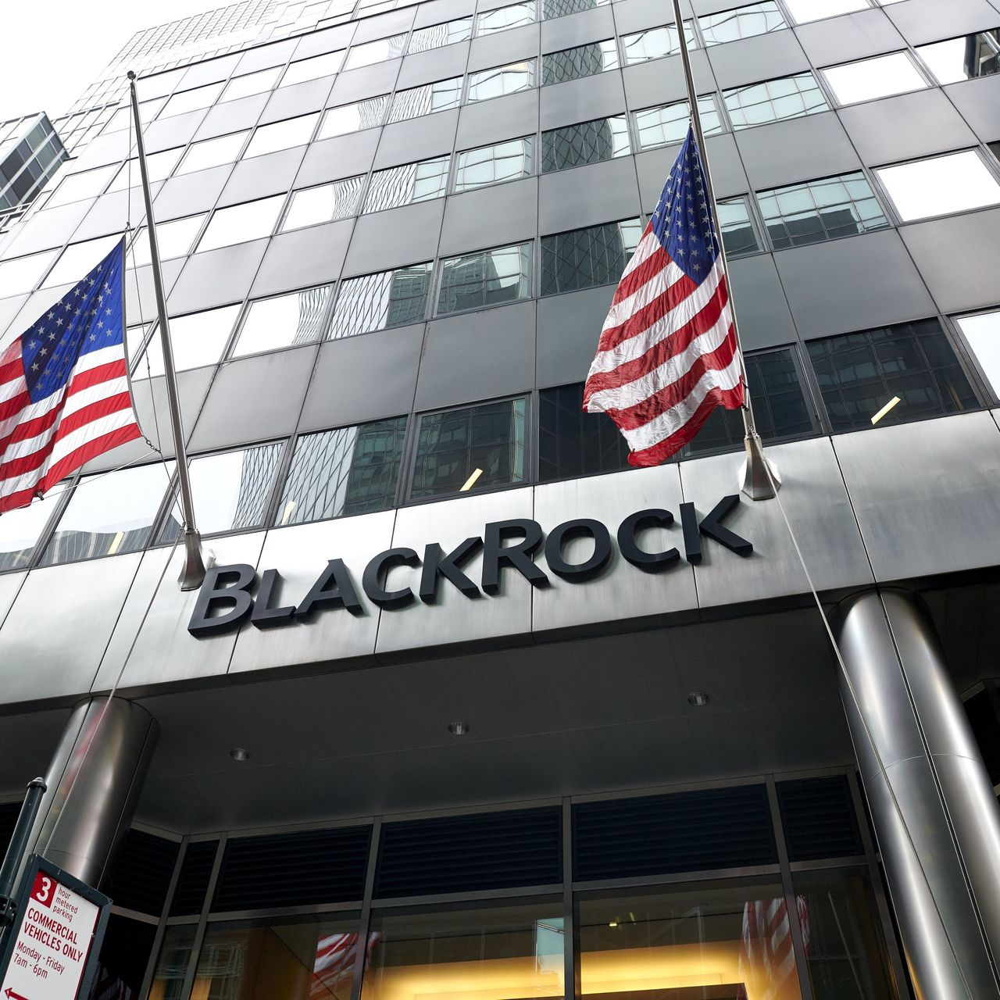

We see case study of Black Rock Company. Black Rock is world's largest Asset Management Company.
Company : Black Rock
Location : New york,NY
Industry Financial Services
Location : New york,NY
Industry Financial Services
BlackRock
BlackRock, Inc. is an American multi-national investment company based in New York City.
Founded in 1988, initially as an enterprise risk management and fixed income institutional asset manager,
BlackRock is the world's largest asset manager, with US$8.59 trillion in assets under management as of December 31,
2022. BlackRock operates globally with 70 offices in 30 countries and clients in 100 countries.
BlackRock is the manager of the iShares group of exchange-traded funds, and along with The Vanguard Group and State
Street, it is considered to be one of the Big Three index fund managers. Its Aladdin software keeps track of
investment portfolios for many major financial institutions and its BlackRock Solutions division provides financial
risk management services. BlackRock is ranked 184th on the Fortune 500 list of the largest United States
corporations by revenue.
--> BlackRock has sought to position itself as an industry leader in environmental, social, and corporate governance (ESG). It has been criticized by some for investing in companies that are involved in fossil fuels, the arms industry, and human rights violations in China. Others have scrutinized BlackRock for its efforts to reduce its investments in companies that contribute to climate change and gun violence and its promotion of gender diversity; the U.S. states of West Virginia, Florida, and Louisiana have divested money away from or refuse to do business with the firm because of its ESG policies. The company has also faced criticism for its close ties with the Federal Reserve during the COVID-19 pandemic and for anti-competitive practices due to its significant ownership stakes in many companies
--> BlackRock has sought to position itself as an industry leader in environmental, social, and corporate governance (ESG). It has been criticized by some for investing in companies that are involved in fossil fuels, the arms industry, and human rights violations in China. Others have scrutinized BlackRock for its efforts to reduce its investments in companies that contribute to climate change and gun violence and its promotion of gender diversity; the U.S. states of West Virginia, Florida, and Louisiana have divested money away from or refuse to do business with the firm because of its ESG policies. The company has also faced criticism for its close ties with the Federal Reserve during the COVID-19 pandemic and for anti-competitive practices due to its significant ownership stakes in many companies
Total assets : US$117.6 billion(2022)
Net Income : US$5.18 billion(2022)
Total equity : US$37.74 billion(2022)
Founders : Robert S. Kapito, Larry Fink
Net Income : US$5.18 billion(2022)
Total equity : US$37.74 billion(2022)
Founders : Robert S. Kapito, Larry Fink
Key People :
As of 2021, Balckrock had an eighteen person board od directors.They were:
1. Larry Fink - Founder,Chairman and CEO
2. Bader M. Alsaad
3. Parmela Daley
4. Jessica P. Einhorn
5. Beth Ford
6. William E. Ford
7. Fabrizio Freda
8. Murry S. Gerber
9. L. Johnson
11. D.Mills
12. Gorden Nixon
13. Kristin Peck
14. Charles Robbins
15. Carlos Slim Domit
16. Hans Vestberg
17. Susan Wagner
18. Brian Desse
1. Larry Fink - Founder,Chairman and CEO
2. Bader M. Alsaad
3. Parmela Daley
4. Jessica P. Einhorn
5. Beth Ford
6. William E. Ford
7. Fabrizio Freda
8. Murry S. Gerber
9. L. Johnson
11. D.Mills
12. Gorden Nixon
13. Kristin Peck
14. Charles Robbins
15. Carlos Slim Domit
16. Hans Vestberg
17. Susan Wagner
18. Brian Desse
BalckRock handles $10 trillion assets and finances. Balckrock Invests in all big and small companies. It invests in google, microsoft,
tesla, facebook, amazon, apple, netflix etc.. It owns this all companies's shares.It also invests in food, agriculture, petrolium, AI etc.
So, BalckRock is world's biggest Company.
